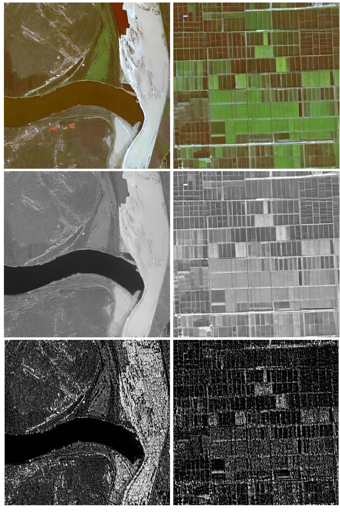
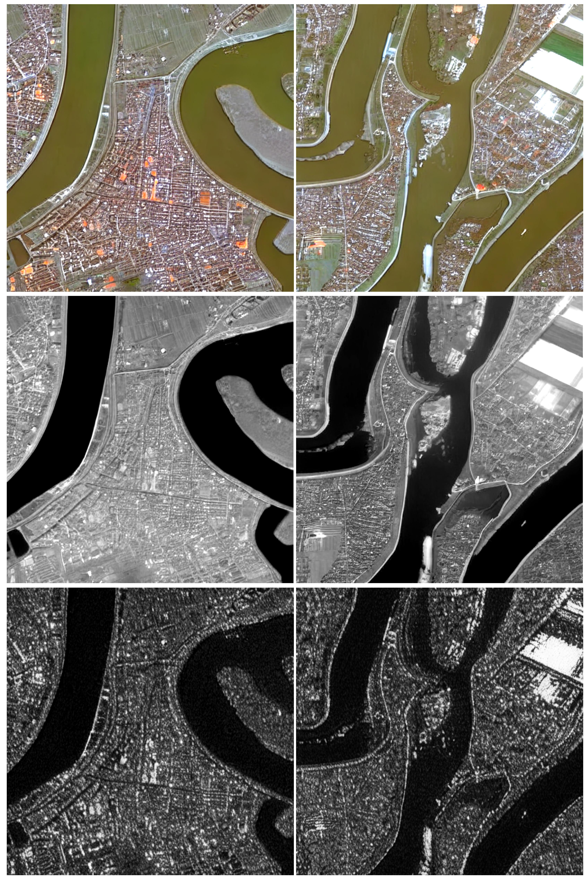

Generation Results

Optical, Infrared, and SAR generation results.

Multi-modal generation from text prompts.

High-quality synthesis of remote sensing scenes.

Structural consistency across modalities.

Structural consistency across modalities.
WHU-OPT-SAR dataset. Slide to view more generation results across different modalities. Each column represents a generated sample.